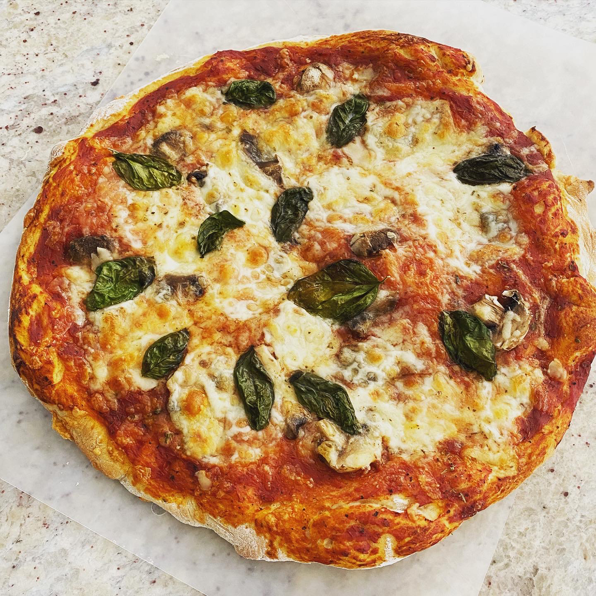

Home
Pizza

Description
Pizza is a dish of Italian origin consisting of a usually round,
flat base of leavened wheat-based dough topped with tomatoes, cheese,
and often various other ingredients (such as various types of sausage, anchovies, mushrooms, onions, olives, vegetables, meat, ham, etc.),
which is then baked at a high temperature, traditionally in a wood-fired oven.A small pizza is sometimes called a pizzetta.
A person who makes pizza is known as a pizzaiolo.
ingredients for 12 people
- 1 (.25 ounce) package active dry yeast
- 1 cup warm water (110 degrees F/45 degrees C)
- 2 cups bread flour
- 2 tablespoons olive oil
- 1 teaspoon salt
- 2 teaspoons white sugar
Steps
- In a small bowl, dissolve yeast in warm water. Let stand until creamy, about 10 minutes.
- In a large bowl, combine 2 cups bread flour, olive oil, salt, white sugar and the yeast mixture; stir well to combine.
Beat well until a stiff dough has formed. Cover and rise until doubled in volume, about 30 minutes.
Meanwhile, preheat oven to 350 degrees F (175 degrees C).
- Turn dough out onto a well floured surface. Form dough into a round and roll out into a pizza crust shape.
Cover with your favorite sauce and toppings and bake in preheated oven until golden brown, about 20 minutes.
Nutrition facts
Per serving:24 calories; protein 0.2g; carbohydrates 0.9g; fat 2.3g; sodium 194.7mg.